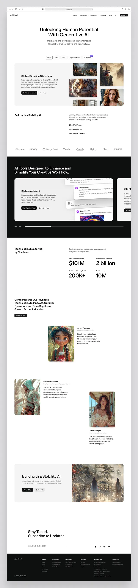

Jon & the Mekong Delta — Vietnam

▶
Life on the river — A slow travel film shot on the Mekong
Travel Filmmaker & Storyteller — Southeast Asia & Beyond
Jon Bon captures the spirit of places, the rhythm of streets, and the quiet beauty
of moments most people walk past. Documentary storytelling, one frame at a time.


Life on the river — A slow travel film shot on the Mekong
4AM. The silence before sunrise over the world's largest temple
Lantern festivals, night markets & mountain monasteries
A destination wedding filmed at a clifftop villa overlooking the Indian Ocean

Jon Bon — Filmmaker, 2025
Drawing inspiration from places, people and the unscripted moments in between, every film is crafted to feel lived-in, honest, and beautifully alive.
Based out of Southeast Asia, Jon travels with a small, quiet kit — no crews, no setups — capturing the world as it actually is. The result is intimate, atmospheric storytelling that holds up long after the trip ends.
If you're looking for a travel filmmaker to document an expedition, elopement, brand trip, or destination event — get in touch.
watch on youtube →"You captured everything — the big and the small moments that we'll hold dear forever."— Sarah & Mike, Bali 2025